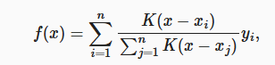
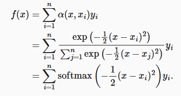
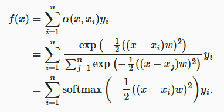
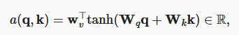
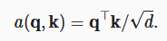

深度学习——注意力机制（四）
注意力机制
我们进行观察时，会有很多的东西称为线索 key ，然后每个线索对应一个真实的感知输入称为 value。而我们的观察往往受到我们意志的影响我们的意志称为查询 query。
1 注意力汇聚
整个注意力机制可以理解成对每个输入（query），关注的地方会不同，为了获得一个最佳的输出就要对 value 进行一个加权平均，而有许多的方法来计算权重。注意力汇聚就是计算这个权重。权重一般计算方法为
就是一个 softmax 函数，而里面的 K 核函数则有很多种，称为注意力分数。
1.1 Nadaraya-Watson 核回归
他的注意力分数使用平方误差的方式最终权重为为了使其可以学习，就加入了参数
1.2 加性注意力
当 query、key、value 变成向量后，使用上述核回归就不行了，softmax 函数里需要标量，加性注意力就是多了一个隐藏层将不同长度的向量映射为相同长度 h 后，再用 tanh 函数和全连接层转成一个标量
1.3 缩放点击注意力
当 query 和 key 向量长度一样时就可以使用，利用点击代表查询与键的相似性。为了将最终标量方差设为1，需要除以长度的开方。

2 多头注意力
为了让 query 向量的不同部分有不同关注部分，将三个向量先进行一个映射到相同长度下，然后将其分成不同的头，每个头各自计算自己的注意力，最后再用一个全连接层映射到最终输出。